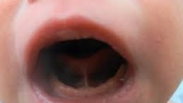

Le frein lingual est une membrane fine qui connecte la langue au plancher de la cavité buccale. Lorsqu'un frein est présent, on peut parler d'ankyloglosse, un terme dérivé des mots grecs 'agkilos' (déformé ou recourbé) et 'glossa' (langue).
Formation embryologique et frein lingual
Durant la vie intra-utérine, la langue est initialement attachée au plancher buccal. Vers la 12ème semaine de gestation, un processus naturel appelé apoptose permet de séparer la langue, détruisant partiellement ou totalement la membrane reliant la langue au plancher buccal. Si ce processus est incomplet, un frein lingual peut persister et limiter les mouvements de la langue.

« Imaginez que vos chaussures soient attachées l'une à l'autre par leurs lacets. »
Vous pourriez certes marcher, voire même trottiner si le lien n'est pas trop serré, mais cela resterait bien plus compliqué que de se déplacer librement. Il en va de même avec un frein de langue restrictif : la langue peut bouger ou même se tirer un peu, mais sa liberté de mouvement est limitée.
Cette contrainte peut avoir des répercussions sur les fonctions auxquelles la langue participe, comme avaler (déglutition), mâcher (mastication) ou parler (langage), entre autres.
Un frein lingual restrictif, tel que défini par l'IATP (« International Affiliation of Tongue Tie Professionals »), est un frein embryologique situé à la ligne médiane sous la langue, restreignant sa mobilité normale.
Ce frein peut être plus ou moins restrictif, selon sa forme et sa taille. Il est possible d'avoir un frein sans symptômes (non-restrictif) ou, au contraire, un frein provoquant des dysfonctionnements (restrictif).
Une langue avec un frein restrictif fonctionne comme des chaussures attachées par leurs lacets : les mouvements sont possibles mais limités, rendant certaines actions beaucoup plus difficiles.